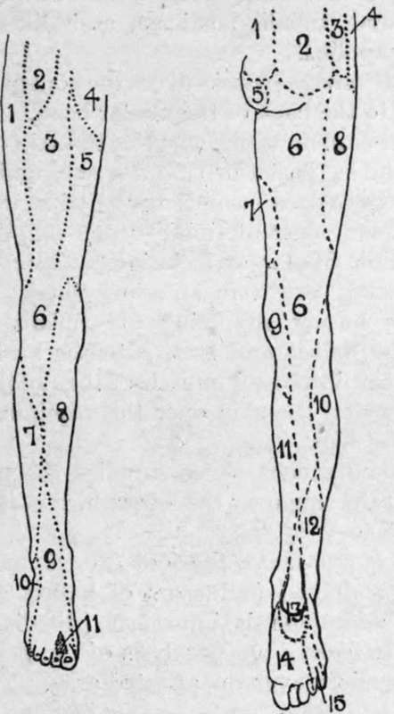

The Nerves of the Lower Extremity
Description
This section is from the book "Surgical Anatomy", by John A. C. MacEwen. Also available from Amazon: Surgical Anatomy.
The Nerves of the Lower Extremity
The spinal origins of the nerves supplying the muscles of the lower limb are :-adductors, ilio-psoas, pectineus, sartorius (third lumbar) ; quadriceps extensor cruris (fourth lumbar) ; hamstrings, glutei medius and minimus, tensor fasciae femoris (fifth lumbar) ; gluteus maximus, short external rotators of hip-joint, peronei, extensors of toes, flexors of ankle (first sacral) ; gastrocnemius, soleus, long flexors of toes, extensors of ankle, muscles of sole (second sacral).
The obturator nerve arises from the second to the fourth lumbar nerves in the psoas muscle, from the inner border of which it emerges to pass through the obturator foramen into the thigh, dividing into superficial and deep branches, of which the former supplies the hip-joint through the cotyloid notch, the adductors longus, gracilis, and brevis, the femoral artery in Hunter's canal, and the skin over the lower two-thirds of the inside of the thigh. The deep branch supplies the obturator externus muscle, the adductors magnus and brevis, and the knee-joint.
Injury of this nerve alone is rare, but may be caused by pressure of the foetal head or of an obturator hernia. In paralysis, adduction, or crossing, of the limbs is impossible, and outward rotation difficult. Sensation is also affected over the part of the thigh supplied.
The anterior crural nerve arises from the second to the fourth lumbar nerves in the psoas muscle, from which it emerges on the outer border, to enter the thigh between the psoas and iliacus muscles, which it supplies by passing under Poupart's ligament. In the thigh it supplies the pectineus, sartorius, and quadriceps, articular branches to the hip and knee joints, and middle and internal cutaneous branches to supply the greater portion of the front of the thigh. The long, or internal saphenous, branch accompanies the femoral vessels to the inner side of the knee, where it supplies an articular branch to the knee-joint, and a branch to the patellar plexus, and then supplies the skin of the leg and foot in front, and to the inner side.
The nerve may be injured by fractures, or tumours, of the pelvis, psoas abscess, etc., and when paralyzed the hip cannot be flexed (ilio-psoas), nor the knee extended (quadriceps).
The great sciatic nerve arises from the fourth and fifth lumbar, and the first to the third sacral nerves, passes out through the great sciatic foramen, and divides into internal (or tibial) and external (or peroneal) popliteal nerves. The trunk supplies articular branches to the hip and knee joints, muscular branches to the hamstrings and smaller muscles of the hip. The tibial nerve is derived from the anterior trunks of the fourth and fifth lumbar, and first and second, and part of the third sacral, while the peroneal is derived from the posterior trunks of the fourth and fifth lumbar, and first and second sacral.
The tibial nerve enters the leg at the lower border of the popliteus muscle, which it supplies, as well as the tibials posticus, gastrocnemius, soleus,and plantaris, while lower down it supplies the flexor longus digitorum and hallucis. It also supplies the knee-joint, and, together with the peroneal communicating, forms the short sapherrous nerve, which supplies the skin of the outer and back parts of the lower third of the leg, ankle, heel, outer side of foot, and little toe, and gives an articular branch to the ankle. It terminates by dividing into internal and external plantar nerves, the former of which is the larger, and is homologous with the median nerve in the hand, while the latter is homologous with the ulnar (q.v.).
Fig. 46.-Nerve-Supply of Lower Extremity.
1. | Ext. cutaneous. | 1. | Post, sacral. |
2. | Genito-crural. | 2. | Post. lumbar. |
3. | Middle cutaneous. | 0* | Ilio-hypogastric. |
4. | Ilioinguinal. | 4. | Last thoracic. |
5. | Int. cutaneous. | 5 | Perforai, cutan, of fourth sacral. |
6. | Patellar plexus from long saphenous | 6. | Small sciatic. |
and ext., middle, and int. cutaneous. | 7. | Obturator. | |
7. | Ext. popliteal. | 8. | Ext. cutaneous. |
3. | Long or int. saphenous. | 9. | Int. cutaneous. |
9. | Musculocutaneous. | 10. | Ext. popliteal. |
10. | Short or ext. saphenous. | 11. | Long saphenous. |
11. | Ant. tibial. | 12. | Short saphenous. |
Int. calcaneal of post, tibial. | |||
14. | Int. plantar of post, tibial. | ||
15. | Ext. plantar of post, tibial. |
In paralysis of this nerve the toes cannot be flexed, nor the ankle extended (long flexors of hallux and toes, tibialis posticus, gastrocnemius, and soleus). Adduction and inversion of the foot are impaired (tibialis posticus), as is likewise sensation over the area supplied.
The peroneal nerve passes over the outer head of the gastrocnemius to the back of the fibular head. At this part it gives off a sural branch, which supplies the skin over the upper two-thirds of the leg posteriorly, and a communicating branch to form the external saphenous nerve with the tibial communicating. The recurrent tibial branch supplies the tibialis anticus, and tibio-fibular articulation, and knee-joint. The terminal branches are the anterior tibial and musculocutaneous, the former supplying the tibialis anticus, long extensors of the hallux and toes, extensor brevis digitorum, the three dorsal interossei muscles, the ankle, and other adjacent joints, and the skin over the adjoining sides of the great and second toes.
The musculo-cutaneous nerve supplies the peronei longus and brevis, and the skin over the lower third of the leg, dorsum of the foot, and toes.
In paralysis of the nerve the foot droops, and can neither be flexed nor abducted (extensors of hallux and toes, and peronei), and adduction is imperfect (tibialis anticus). It also becomes flattened from paralysis of the peroneus longus. Sensation is impaired over the affected area.
Continue to:
- prev: The Tarso-Metatarsal Articulations. Continued
- Table of Contents
- next: Section V. Upper Extremity. Region Of The Shoulder. Surface Anatomy